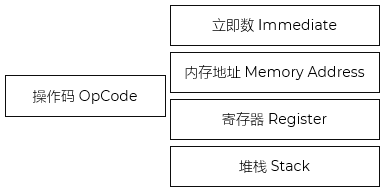
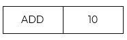
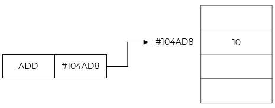
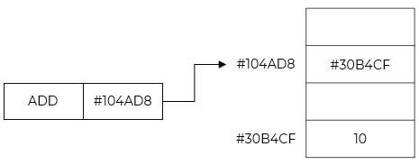
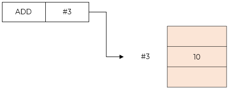
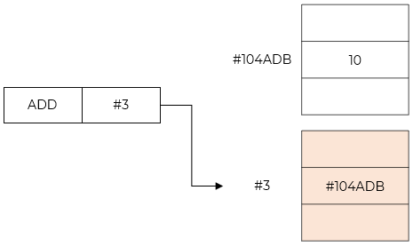

- 指令系统 Instruction Code System
- 指令是能被计算机识别并执行的二进制代码，也叫机器指令，通常一条指令对应着一种基本操作
- 计算机所能直接执行的全部指令，称为该计算机的指令系统，也称指令集 Instruction Code Set
- CPU 支持两组不同的指令集
CISC - Complex instruction set Computing，复杂指令系统计算机
RISC - Reduced Instruction Set Computing，精简指令系统计算机
CISC vs RISC
| Feature |
CISC |
RISC |
| 指令系统 |
复杂，庞大 |
简单，精简 |
| 指令数目 |
一般大于200 |
一般小于100 |
| 指令格式 |
一般大于4 |
一般小于4 |
| 寻址方式 |
一般大于4 |
一般小于4 |
| 指令字长 |
不固定 |
等长 |
| 可访存指令 |
不加限制 |
只有LOAD/STORE指令 |
| 各种指令使用频率 |
相差很大 |
相差不大 |
| 各种指令执行时间 |
相差很大 |
绝大多数在一个周期内完成 |
| 优化编译实现 |
很难 |
很容易 |
| 程序源代码长度 |
较短 |
较长 |
| 控制器实现方式 |
绝大多数为微程序控制 |
绝大多数为硬布线控制 |
| 软件系统开发时间 |
较短 |
较长 |
- 指令 Instruction Code
- 根据冯 · 诺依曼机的"存储程序"概念，计算机的工作过程实际上就是执行指令和程序的过程
- 指令是能被计算机识别并执行的二进制代码，用来完成某一特定的操作
- 计算机运行的最小功能单位
- 指令通常用二进制代码形式表示，也可以用助记符表达的汇编语言形式表示
- 一条指令由操作码 Opcode 和操作数 Operand 两部分组成
操作码：计算机要完成的操作，如取数、加法等
操作数：操作对象的内容或所在内存单元的地址
操作的对象有时存放的是数据的地址，又称地址码 Address Code

指令
- 寻址方式 Addressing
- 寻找地址码|操作数
1. 立即寻址 Immediate Addressing
- 操作数放在指令中，操作数也叫立即数
- 如果操作数比较大，突破了地址码长度的限制，就必须通过存放地址来指向数据
- 速度最快

立即寻址
2. 直接寻址 Direct Addressing
- 操作数存放在内存中
- 地址码存放的是操作数对应的内存地址
- 寻址过程
CPU从指令中取出地址 #104AD8
访问内存该地址，读取数据 10
执行操作 - 加法

直接寻址
3. 间接寻址 Indirect Addressing
- 操作数存放在内存中
- 地址码存放的是指向操作数地址的指针
- 工作流程：
取指令地址 #104AD8
访问内存得中间值 #30B4CF，即真实数据地址
再访问内存 #30B4CF 得到实际数据 10

间接寻址
4. 寄存器寻址 Register Addressing
- 操作数存放在寄存器
- 地址码给出使用的寄存器的编号
- 工作流程：
指令存储寄存器号 #3
CPU 直接从寄存器文件读取值 10
执行运算

寄存器寻址
5. 寄存器间接寻址 Register Indirect Addressing
- 操作数存放在内存
- 地址码给出寄存器的编号
- 寄存器存储的是操作数的内存地址
- 工作流程：
指令指定寄存器 #3
读寄存器得地址 #104AD8
访问内存该地址得数据 10

寄存器间接寻址
-
寄存器数量有限；通常8~32个通用寄存器；需编译器优化寄存器分配
寄存器访问延迟远低于内存
6. 堆栈寻址 Stack Address
- 通过堆栈指针寄存器 SP Stack Pointer 来间接指向的
- 本质上是一种特殊的寄存器间接寻址，但在逻辑上我们常单独称为堆栈寻址
- 也称零地址寻址
- 指令分类
- 根据指令中涉及到的地址多少分类；见下表
指令分类
| item |
demo |
desc |
| 零地址指令 |
|
没有地址码，只有操作码 |
| 单地址指令 |
ADD a |
自增/减；读；存 |
| 二地址指令 |
ADD a b |
a+b，结果放在a |
| 三地址指令 |
ADD a b c |
a+b，结果放在c |
| 四地址指令 |
|
额外增加：下一条指令的地址 |
- 不同的计算机类型，其指令系统的指令条数和功能也不尽相同。根据功能，指令系统可分为以下五种类型
-
数据传送：负责数据在内存与 CPU 之间的传输
数据处理：对数据进行算术、逻辑或关系运算
程序控制：控制程序中指令的执行顺序，如条件转移、无条件转移、调用子程序、返回、停机等
输入/输出：用来实现外部设备与主机之间的数据传输
状态管理：对计算机的硬件进行管理等
- 程序 Program
- 指能完成特定功能的一组指令的有序集合
- 计算机按照程序设定的指令顺序依次执行，完成对应的一系列操作，这就是程序执行的过程
- 执行过程 Processing
-
取指令 Fetch：根据当前控制器中程序计数器的指令起始地址值，从内存中取出指令送往控制器的指令寄存器存储起来
分析指令 Decode：将指令寄存器中存放的指令送往指令译码器，对操作码进行译码，即将指令的操作码转换成相应的控制电位信号，由地址码确定操作数地址
执行指令 Execute：由操作控制部件发出该操作所需要的一系列控制信号，驱动相应部件完成该指令所要求的操作。程序计数器自动加1：为执行下一条指令做好准备，即形成下一条指令地址
- 流水线
- 多条指令执行的并行处理技术
- 每个阶段由不同的处理部件完成，所以要确保处理部件没有空闲，利用效率和处理效率要高
- 整体处理过程明显缩短
| 取 |
取 |
取 |
取 |
取 |
取 |
取 |
|
|
|
分析 |
分析 |
分析 |
分析 |
分析 |
分析 |
分析 |
|
|
|
执行 |
执行 |
执行 |
执行 |
执行 |
执行 |
执行 |
- 零地址指令采用( )
-
立即寻址
间接寻址
堆栈寻址
变址寻址
- 下拉关于流水线方式执行指令的叙述中，不正确的是（）
-
流水线方式可以提高单条指令的执行速度
流水线方式可以同时执行多条指令
流水线方式提高了各部件的利用率
流水线方式提高了系统的吞吐率